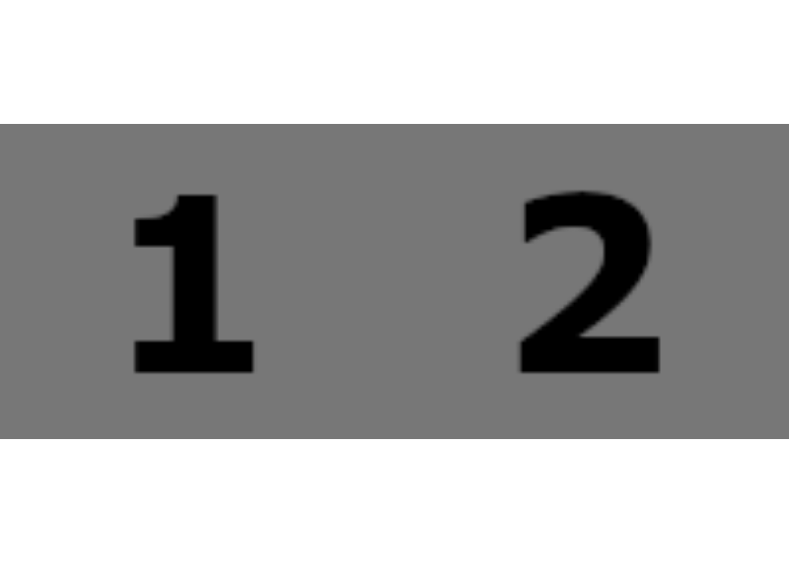
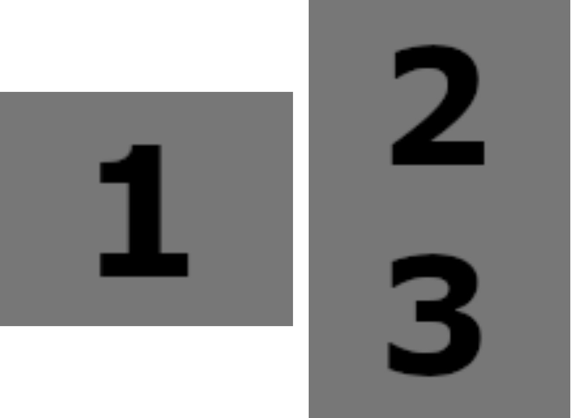

1 + 12 RStudio
この章では、RStudio の使い方について述べようと思います。ここに書いていることは、他の章全体に関わってきます。
2.1 R と RStudio
Tip
TIP 003: R と RStudio って何？
- R は、R 本体です (https://cran.r-project.org/)
- RStudio は、R を快適に使うためのアプリで、このようなアプリを「統合開発環境」(IDE) とい言います (https://posit.co/download/rstudio-desktop/)
R と RStudio は、それぞれ別の団体が作っています。
2.2 ソース Pane
Tip
TIP 004: 新規ファイルは “R Script” か “R Markdown”
2.3 Console Pane
Tip
TIP 005: Console の使い方
Console Pane は、最初の状態では左下にあります。
- Console: R を実行します
- Terminal: Windows の場合は PowerShell、macOS の場合は bash です。
- Background jobs: R を実行した際に出てきたメッセージが表示されます
Console に合わせて、以下のように入力してみましょう。
そうすると、[1] 2 と表示されたかと思います。
結果である 2 は分かりますが、[1] は何でしょうか？実は、R では変数がすべて複数の値からなるベクトルになります。ベクトルの 1 番目の要素なので、[1] と表示されています。
では、次はわざと 100 この要素からなるベクトルを表示させてみましょう。
1:100[1] 1 2 3 4 5 6 7 8 9 10 11 12 13 14
[15] 15 16 17 18 19 20 21 22 23 24 25 26 27 28
…
となっていますね。二行目は 15 番目の要素なので、[15] となっています。
2.4 Environment Pane
- Environment
- History
- Connections
- Build
- Tutorial
このほか、Git を利用すると Git タブが追加されます。
2.5 Files Pane
右下にあります。
- Files
- Plots
- Packages
- Help
- Viewer
- Presentation
2.6 RStudio の基本機能
Tip
TIP 006: コードを補完
RStudio の基本的な機能として、Console と Quarto Document や R Markdown のコードチャンク中で、コード補完をします。
Tip
TIP 007: コメント
R スクリプトや Quarto Document のコードチャンク中で、# 記号はコメントとなります。
ソースコードを選択し、Control + Shift + C とすると、まとめてコメントアウトします。
Tip
TIP 008: インデント
ソースコードは、見やすくするために適度にインデントをつけた方が良いです。Tab キーを押すことで半角スペース 2 つ分追加します。
インデントを減らしたい場合は Shift + Tab とします。
2.7 RStudio を使いやすくする
Tip
TIP 009: ペインを増やす
2.8 パッケージをインストール
2.9 R の更新
Tip
TIP 010: R を更新
2024/3/8 時点での R バージョンは 4.3.3 です。
RStudio を使用していると、RStudio の新しいバージョンが出ると、アップデートするかどうか聞かれます。
しかしながら、R 自体の更新については何も言ってくれません。
R の新しいバージョンが出たかどうかは自分で調べ、定期的に更新する必要があります。
更新といっても、Webサイトからダウンロードしてインストールするだけです。
https://cran.r-project.org/
なお、Windows では、複数バージョンの R をインストールすることができてしまいます。R を更新しても、RStudio は古い R を使用し続けます。
Tools > Global Options を開き、
General から、R を変更しましょう。
2.10 関数の中身を見る
Tip
TIP 011: 関数の中身を見る
R に備わっている関数は、その中身を見ることができます。
chisq.test() 関数の中身を見てみましょう。
- Console を使う
Console で、関数名を、カッコをつけずに入力します。
> chisq.testこの下に、関数の中身が表示されます。
- キーボード操作
Quarto Document や R Markdown で、関数の部分にマウスを合わせて、macOS の場合は Command + Click、Windows の場合は Control + Click します。
chisq.test(x)Source ペインに新たなタブができ、関数の中身が表示されます。
2.11 QMD/Rmd での表の挿入
Tip
TIP 012: 表の挿入 (1)
Quarto Document での表作成は、見出しとデータ部分を --- (ダッシュ記号の数はいくつでも良い) で区切ることで可能。列を追加するには、| を使う。日本語キーボードでは、0 の 3 つ隣 (SHIFT キーを押しながら)。
https://quarto.org/docs/authoring/tables.html
| fruit | price |
|---|-|
| apple | 2.05 |
| pear | 1.37 |
| orange | 3.09 |演習: https://github.com/babayoshihiko/R1000/blob/main/exercise/table_not_df/table_Qmd.qmd
Tip
TIP 013: 表の挿入 (2)
左よせ、右よせ、中央揃いは、: を使う。ヘッダ部分には適用されない。
| Default | Left | Right | Center |
|---------|:-----|------:|:------:|
| 12 | 12 | 12 | 12 |
| 123 | 123 | 123 | 123 |
| 1 | 1 | 1 | 1 |演習: https://github.com/babayoshihiko/R1000/blob/main/exercise/table_not_df/table_Qmd.qmd
Tip
TIP 014: 表の挿入 (3): キャプションを設定
キャプションには、: を使う。
| fruit | price |
|---|-|
| apple | 2.05 |
| pear | 1.37 |
| orange | 3.09 |
: 果物
Tip
TIP 015: 表の挿入 (4): 列幅を変更
以下は、R Markdown にはなかった機能。タイトルを書く : にオプションを設定することができる。
| fruit | price |
|---|-|
| apple | 2.05 |
| pear | 1.37 |
| orange | 3.09 |ドキュメントでは、ダッシュ記号の数で、第 1 列が 75%、第 2 列が 25% になると書かれているが、実際にはそうならない。
| fruit | price |
|--------|--------|
| apple | 2.05 |
| pear | 1.37 |
| orange | 3.09 |
: {tbl-colwidths="[75,25]"}こちらは機能する。
Tip
TIP 016: 表の挿入 (5): 1 行おきに背景色を変える
1 行おきに背景色を変える方法。
| fruit | price |
|--------|--------|
| apple | 2.05 |
| pear | 1.37 |
| orange | 3.09 |: {.striped .hover}
演習: https://github.com/babayoshihiko/R1000/blob/main/exercise/table_not_df/table_Qmd.qmd
2.12 QMD/Rmd での画像の挿入
Tip
TIP 017: 画像ファイルを挿入 (1): PNG
本文中に

とします。
Tip
TIP 018: 画像ファイルの挿入 (2): PNG (ggplot2)
次の方法は、ggplot2 を使って PNG ファイルを挿入する方法です。
library(ggplot2)
library(grid) # rasterGrob()
library(magick) # image_read()
img <- ggplot(data.frame()) +
xlim(c(0,10)) + ylim(c(0,10)) +
annotation_custom(rasterGrob(image_read("img/xxx.png"), interpolate=TRUE), xmin=0, xmax=10, ymin=0, ymax=10) +
theme_void()img多くのパッケージを必要とします。長所として、ggplot2 を使って PNG ファイルの上にテキストや矢印などを追加することができます。
しかし、位置の調整が難しいことが短所です。
Tip
TIP 019: 画像ファイルの挿入 (3): PDF
library(ggplot2) # qplot()
library(grid) # rasterGrob()
library(magick) # image_read_pdf(), image_draw()
pdfArtile <- image_read_pdf("xxx.pdf", density=74)
img <- qplot(1:10, 1:10, geom="blank") +
xlim(c(0,10)) + ylim(c(0,10)) +
annotation_custom(rasterGrob(image_draw(pdfArtile[2]), interpolate=TRUE), xmin=0, xmax=10, ymin=0, ymax=10) +
annotate("rect",xmin=0.5,xmax=5.0,ymin=2.2,ymax=3.8, alpha=0, fill="white", colour="red", size=2) +
scale_x_continuous(expand = c(0, 0)) +
scale_y_continuous(expand = c(0, 0)) +
coord_cartesian(xlim = c(0,10), ylim = c(0,10), clip = "off") +
theme_bw()img
Tip
TIP 020: 画像ファイルを横に並べる (1)
画像が十分小さければ、自然に横に並びます。
Tip
TIP 021: 画像ファイルを横に並べる (2): {gridExtra}
ggplot2 でプロットを作成しておき、{gridExtra} の grid.arrange() 関数で並べます。ncol が列数、nrow が行数を指定します。
library(grid) # rasterGrob()
library(magick) # image_read()
library(gridExtra) #grid.arrange
img1 <- rasterGrob(image_read("img/No1.png"))
img2 <- rasterGrob(image_read("img/No2.png"))
grid.arrange(img1, img2, ncol=2, nrow=1)
{gridExtra} では、より複雑なレイアウトも可能です。
img3 <- rasterGrob(image_read("img/No3.png"))
grid.arrange(img1, img2, img3, layout_matrix=matrix(c(1,1,2,3), ncol=2))
layout_matrix 引数にわらすのは Matrix クラスです。以下の様に、1 を縦に並べることで、上の様なレイアウトになります。
[
\[\begin{pmatrix} 1 & 2 \\ 1 & 3 \\ \end{pmatrix}\]]
2.13 Addin
Tip
TIP 022: addin
Addin は、RStudio の上部、メニューアイコンにあります。Addin も R のパッケージです。インストールすると、すぐに使うことができます。
Addin は、デフォルトのものは少ないので、追加でインストールしましょう。
Tip
TIP 023: {styler}
{styler} パッケージをインストールしてみましょう。
以下のコードは、インデントされていません。
if (a == 1) {
print("hello")
}コードを選択し、Addins > Style selection を実行すると、以下のようになります。
if (a == 1) {
print("hello")
}